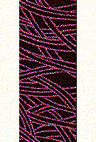

P.O. Box 1342 * Bellevue, WA 98009 * jlk@eskimo.com
 2000 Jane L. Kakaley
2000 Jane L. Kakaley
PART TWO
If you have not yet completed Part One, please finish before continuing with Part Two.
1. Sew strips together in the following order and label as Strata #1 (Figure 1).
 1" strip of fabric W
1" strip of fabric W
2 3/4" strip of fabric B
1" strip of fabric W

Figure 1
2. Repeat Step 1 for a total of 2(15) sets of Strata #1.
3. Sew strips together in the following order and label as Strata #2 (Figure 2).
1" strip of fabric G
2 3/4" strip of fabric B
1" strip of fabric G
Figure 2
4. Repeat Step 3 for a total of 3(22) sets of Strata #2.
5. Sew strips together in the following order and label as Strata #3 (Figure 3).
1" strip of fabric W
2 3/4" strip of fabric G
1" strip of fabric W
Figure 3
6. Repeat Step 5 for a total of 1(5) sets of Strata #3.
7. Sew strips together in the following order and label as Strata #4 (Figure 4).
1" strip of fabric W
1" strip of fabric G
2 1/4" strip of fabric B
1" strip of fabric G
1" strip of fabric W
Figure 4
8. Repeat Step 7 for a total of 2(15) sets of Strata #4.
Strata #'s 1, 2, and 3 should measure 3 3/4" wide. Strata #4 should measure 4 1/4" wide.
Part Three will be available August 15th. Have fun!